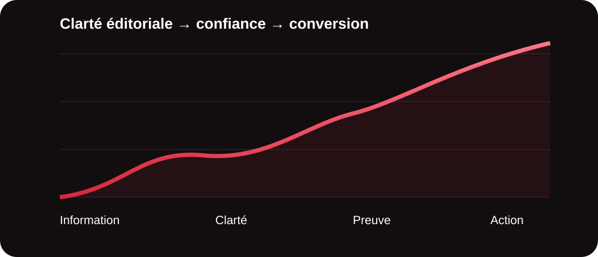
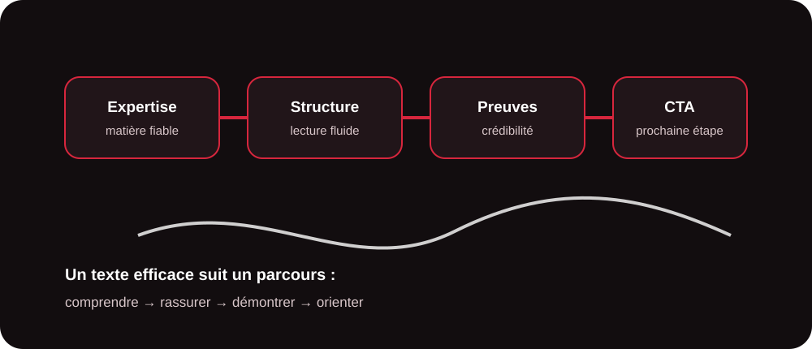
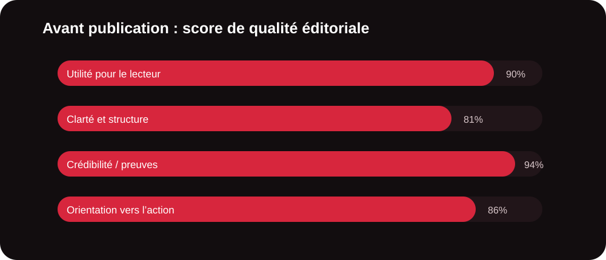

Pourquoi la rédaction web ne consiste pas seulement à bien écrire
Un contenu web efficace doit répondre à une question simple : qu’est-ce que le lecteur doit comprendre ou faire après sa lecture ? Une entreprise peut parfaitement maîtriser son sujet et pourtant publier des textes trop techniques, trop longs ou trop centrés sur son propre discours.
La rédaction web consiste justement à transformer cette expertise en une information accessible. Elle associe précision, structure, pédagogie et orientation business. Pour MinoSeo, l’enjeu est double : produire des contenus utiles aux internautes et construire des pages capables de soutenir la visibilité SEO/GEO et la conversion.

Commencer par le lecteur et son intention
Avant de rédiger, il faut identifier la personne à qui l’on s’adresse, son niveau de connaissance et surtout son besoin. Cherche-t-elle une définition, une méthode, une comparaison, une solution à un problème ou un prestataire ? Cette intention détermine le vocabulaire, le niveau de détail et la place du discours commercial.
Une page destinée à un prospect débutant doit expliquer les termes essentiels avant d’aborder les aspects complexes. À l’inverse, une audience experte attend davantage de précision, de données, de cas d’usage et de critères de décision. Dans les deux cas, la règle reste la même : ne pas faire travailler inutilement le lecteur.
Construire une structure qui guide la lecture
Sur le web, la majorité des lecteurs scanne d’abord la page. Les titres, sous-titres, listes, paragraphes courts, tableaux et éléments visuels servent donc de repères. Une bonne structure doit permettre de comprendre le sujet même en parcourant rapidement les intertitres.
| Élément | Rôle | Bonne pratique |
|---|---|---|
| Titre | Promettre une réponse claire. | Associer sujet, bénéfice et angle. |
| Introduction | Donner envie de poursuivre. | Poser le problème et annoncer la valeur. |
| Sous-titres | Découper le raisonnement. | Un intertitre = une idée principale. |
| Preuves | Rassurer et crédibiliser. | Exemples, chiffres, méthodes ou références. |
| CTA | Orienter vers la suite. | Une action cohérente avec le niveau de maturité. |

Simplifier sans appauvrir l’expertise
Rendre un texte accessible ne signifie pas supprimer la précision. Il s’agit plutôt d’expliquer les notions complexes au moment où elles deviennent nécessaires. Une phrase peut être courte sans être simpliste ; un terme technique peut être conservé s’il est défini ; une information dense peut être répartie entre plusieurs paragraphes.
Quelques réflexes sont particulièrement efficaces : privilégier les verbes d’action, limiter les phrases à rallonge, supprimer les répétitions, utiliser des exemples concrets et placer l’information importante au début des paragraphes. Le résultat doit donner une impression de fluidité, même lorsque le sujet est spécialisé.
Apporter une vraie valeur ajoutée
Un contenu concurrentiel doit apporter davantage qu’une reformulation générique de ce qui existe déjà. La valeur peut venir d’une méthode, d’un retour d’expérience, d’un exemple, d’une grille de décision, d’un tableau comparatif ou d’une explication qui répond à une objection fréquente.
Pour le SEO et le GEO, cette profondeur est particulièrement utile : une page bien structurée fournit des réponses explicites, des définitions cohérentes et des informations faciles à interpréter. Le contenu doit donc être pensé pour les humains d’abord, les moteurs ensuite.
Écrire pour convaincre sans forcer la vente
La conversion commence bien avant le bouton final. Elle repose sur un enchaînement logique : le lecteur reconnaît son problème, comprend la solution, évalue sa pertinence puis identifie la prochaine étape. Un bon contenu commercial ne multiplie donc pas les appels à l’action ; il les place au moment où ils deviennent naturels.
Le discours doit aussi rester concret. Au lieu d’énumérer des qualités abstraites, il vaut mieux montrer ce que la prestation permet d’obtenir : gagner du temps, clarifier une offre, publier régulièrement, mieux répondre aux recherches ou transformer une expertise interne en contenus exploitables.
Votre expertise mérite-t-elle des contenus plus efficaces ?
MinoSeo transforme vos informations, notes ou sujets métier en contenus structurés, pédagogiques et pensés pour vos objectifs de visibilité et de conversion.
Parler de votre besoinLa méthode MinoSeo pour produire des contenus solides
Une prestation de rédaction web ne commence pas par la rédaction. MinoSeo commence par cadrer le besoin : objectif de la page, cible, intention, angle, niveau de connaissance et action attendue. Cette préparation permet ensuite de produire un contenu cohérent avec la stratégie globale.
- Cadrer le sujet, l’audience, l’intention et l’objectif business.
- Structurer le plan avant d’écrire pour éviter les digressions.
- Rédiger avec un langage clair, précis et adapté au lecteur.
- Optimiser les titres, champs sémantiques, liens internes et éléments SEO utiles.
- Relire sur le fond, la forme, la cohérence et la capacité à faire passer à l’action.

La checklist avant publication
Avant de mettre une page en ligne, quelques questions permettent de détecter rapidement les faiblesses : la promesse du titre est-elle tenue ? Le lecteur comprend-il le sujet sans connaître le jargon ? Les informations importantes sont-elles faciles à trouver ? Les affirmations importantes sont-elles suffisamment étayées ? La page répond-elle à l’intention de recherche ? Enfin, le lecteur sait-il clairement quelle étape suivre ensuite ?
Cette vérification finale évite deux excès fréquents : publier trop vite un texte incomplet ou ajouter du volume sans améliorer réellement son utilité. La qualité éditoriale se mesure moins au nombre de mots qu’à la valeur apportée à chaque section.
Une rédaction qui sert votre visibilité et votre activité
Une bonne rédaction web est à la rencontre de trois exigences : être comprise, être utile et donner envie d’aller plus loin. En travaillant l’intention, la structure, la clarté, les preuves et la conversion, une entreprise transforme son expertise en véritable actif digital.
Pour les entreprises qui manquent de temps, de méthode ou de ressources éditoriales, MinoSeo peut prendre en charge cette production de manière structurée. L’objectif n’est pas de publier pour publier, mais de créer des contenus qui renforcent votre présence en ligne et accompagnent vos prospects dans leur décision.
Besoin de contenus clairs et orientés conversion ?
Confiez à MinoSeo la transformation de votre expertise en contenus web structurés, pédagogiques et adaptés à votre stratégie digitale.
Écrire à MinoSeo